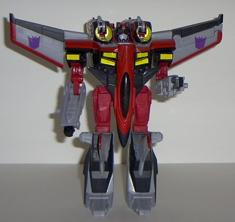

Swindle
Swindle
Allegiance : Minicon
Size : Mini-Con
Difficulty of Transformation : Very Easy
Color Scheme : Dark red, black, and some light gray
Rating : 3.7
Swindle
Allegiance
: Minicon
Size
: Mini-Con
Difficulty of Transformation
: Very
Easy
Color Scheme
: Dark red, black, and
some light gray
Rating
: 3.7
Vehicle mode is an F-1
race car. This mode is pretty nicely detailed, at least mold-wise, and
red and black are fitting colors. However, that's ALL Swindle has on him.
There's the little end cap of gray, but other than that, he's just dark
red and black, with next to no paint detailing. Makes him look more like
an unfinished prototype than the actual product, really. My other real
beef with this mode is that the robot head is very visible on the rear
area- the back "fin" is supposed to cover it up, but it doesn't do the
job well at all. Minicon symbol is on the left side of the car, and the
Minicon port is on the bottom rear of the vehicle.
Robot mode is icky.
Although the tires for the shoulders look cool, and the nice-looking head
has some paint detailing on it. That's about it for the "cool stuff about
this mode. Well, his fin plate looks okay on his chest as well, but that's
it. His arms are completely stupid-looking, and pretty much stuck in the
position shown above, unless you want to move them right or left (but not
back and forth). There's also not even fists molded in to the plastic;
there's just none to speak of. The legs are also odd-looking, and have
no discernable knees, and the feet are mere weird-looking points. What
really takes the cake, though, is that Swindle's feet can only move side-to-side
at the waist. In other words, NO useful leg movement at ALL. Coupled with
the weird arms, there's little redeemable about this mode.
Swindle has a pretty
good, in undetailed, race car mode, but his robot mode is just odd-looking
and unposable. Meh.
 Starscream
Starscream


Allegiance
: Decepticon
Size
: Max-Con
Difficulty of Transformation
: Medium
Color Scheme
: Light gray, dark red,
black, bright yellow, and light gray-black
Powerlinx ports
: 3 (1 gimmicked)
Rating
: 8.4
Vehicle mode is a futuristic
jet, and is pretty cool. There's excellent detailing, both mold-wise and
paint-wise, and even though Starscream really doesn't have that many different
colors on him, there's enough variation in the scheme where you don't notice
right off the bat. The Decepticon symbols on the wings are painted, but
somewhat sloppily- the paint's just on in one big blob, and not detailed
like the symbol. There are also two more Decepticon symbols molded on the
side of the front landing gear, but these aren't painted, alas. Anyway,
I like the overall look of this mode, but a couple of things bug me; although
the robot arms and legs tend to integrate a bit well into this mode, making
somewhat convincing landing gear and rear wings, they ruin the sleekness
of this mode from a side view, as they contribute to the rather bulky underside.
Also, the plane nose droops a bit, for some unknown reason. Woulda been
better if it was straight. And the top of Starscream's robot head is rather
obvious in the middle of the plain. Other than this, you've got a nice
mode. Starscream's missile launchers double as jet exhaust engines, which
look pretty cool. Anyway, onto his gimmicks: If you attach a Minicon to
the gimmicked port on the back, the missile launchers wing forward, ready
to fire. Of course, pressing down the switch to fire them is a little harder
than it should be, and the launchers sometimes swing around even without
the port activated, but still... it's a cool gimmick. Now, with the Minicon
still attached to the port, push it backwards to hear a "takeoff" flight
sound. Continue to press it backwards and the sound continues on for a
while. Also, push DOWN with the Minicon even more to hear a firing sound.
Unfortunately, few Minicons besides Swindle are slender enough to fit on
this rear Minicon port, between the missile launchers. Starscream's other
gimmick involves attaching Swindle to the bottom of the nosecone. Press
down on the cockpit window piece, and Starscream launches Swindle, complete
with a launching sound! Cool! If you press down on the cockpit window piece
without Swindle under it, it will make a firing sound. Unfortunately, you
can activate this sound a bit too easily...
Starscream's robot mode
looks really freakin' cool. It's definitely reminiscent of his old
G1
incarnation
, and not just a name reuse. The face is definitely Starscream,
with a lovely knowing smirk etched on. Definitely adds a ton of character,
that. Other G1 Starscream nods are the cockpit on the chest, the thrusters
on the side of the head, and the wings in their position on the back (although
G1 Starscream's were larger proportionally and a bit lower). Very nice.
Starscream's arms are a bit wonky, though, and a bit too long. The double-elbow
joint articulation does not work well on this toy, nooo. Speaking of articulation,
Starscream does all right for an Armada toy- he has two points of elbow,
two points of shoulder, hip, and two points of knee articulation. Starscream
has a large backpack made up of his missile launchers in this mode, but
I don't think it detracts from the look that much, and his large feet help
keep him stable anyway. Now, as for Starscream's "sword"- it doesn't look
that good, really. And it doesn't really look like a sword- it's too skinny
and long. Hence the fan nickname "Unfolded Stick of Beating". Heheh. What
really looks odd, though, is that only ONE wing comes off and forms a sword,
not BOTH. Would have looked more symmetrical if they both came off to form
swords or something. Meh. There's also been numerous reports of serious
stress marks on Starscream's hand if you insert the sword, meaning it's
a little two big for the hole. This hasn't happened on mine, though. Another
of Starscream's weaknesses is that he has few Powerlinx ports for a toy
his size- only three. So much for piling on the Minicons...
Starscream is a great
toy overall, but he has a few minor flaws you have to overlook, such as
the bulkiness of his plane mode and the odd "sword" of his robot mode.
If you can get past this, though, he's a great toy, and a recommended one.
Review by Beastbot